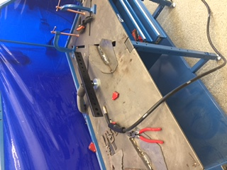
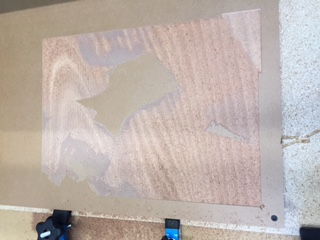
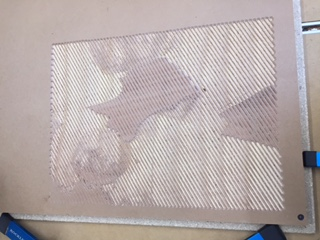
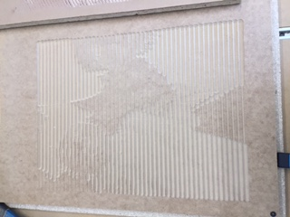
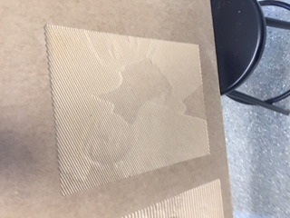

This week we first experienced welding. It was an exciting job. Welding requires moving up and down the media with constant speed and enough depth for the weld to be sturdy enough. We praticed at the table and learned how hard it is.
PhotoVCarve program is significantly easier than welding. We only need to upload the image, choose the right bit and other parameters. We first tried to use extremely fine grooves. However, that did not work out because the details are too subtle.
Then we tried it with deeper cutting depth, and the results were OK, since the faces are visible clearly.
Thinking that we might be on the right track, we tried an even deeper and horizontal cut, but sadly the details did not come out.
Finally, we chose a shallow and thin cutting groove and the printed picture look just like the real one except in black and white!
